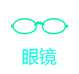
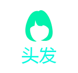

undefined


通过它你可轻松使用麦克风录制的音频来驱动远程控制主播，让虚拟主播实现实时直播功能。使用前请先看下方帮助！
请先点击 '开始录音' 后进行下方操作。
开始录音
'暂停/继续' 快捷键 Space
暂停/继续
清空录音
本地试听
点下方按钮后，会将之前录制音频驱动虚拟主播。快捷键 Enter
音频驱动主播
帮助：'开始录音'只需要点击一次，后面点 ‘暂停/继续’ 和 ‘音频驱动主播’按钮满足日常使用。 通过快捷键，您可在电脑上控制出一个完全实时驱动虚拟主播来进行直播，直播时 记得先在APP上点摄像头图标哦。
必须使用Google Chrome 网络浏览器，首次使用按下方操作:
任何问题请联系客服。